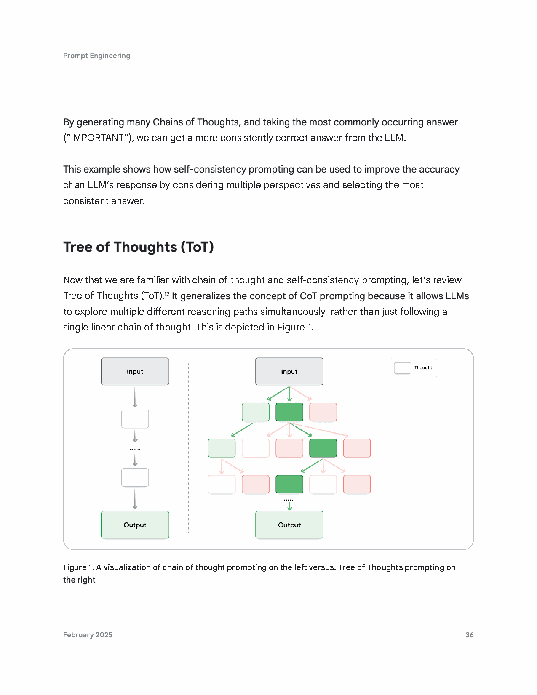

Google 官方提示词工程完全指南
Prompt Engineering for Generative AI
从大模型底层 Softmax 概率采样机理、输出长度控制，到 Step-Back/CoT/ToT 高级推理跃迁，再到代码工程与 ReAct 智能体闭环——Google 官方为企业级 GenAI 开发者量身打造的工业级实战完全手册。
01. 导论与生成哲学 (Introduction & Core Philosophy)
——你不需要成为数据科学家或机器学习工程师，任何人都可以写出一句提示词。然而，编写最有效的工业级提示词，却是一门复杂的系统控制工程。
当思考大语言模型（LLM）的输入与输出时，文本提示词（Prompt，有时伴随图像、音频或视频等多模态输入）是大模型用于预测特定输出的唯一切入点。虽然每个人都能在 ChatGPT 或 Gemini 网页聊天框中键入一句话，但构建企业级、高确定性、可重复执行的生产级提示词，却极具挑战性。
在 Google 看来，提示词的实际效能受控于六大关键维度的交织影响：
- 使用的底座模型（The model you use）：不同参数规模（如 Gemini 1.5 Flash vs Pro）、不同对齐方式的模型对相同提示词的响应特性存在显著漂移。
- 模型的训练语料（The model’s training data）：语料库中特定领域术语的密度直接决定了模型对行话概念的理解能力。
- 模型配置参数（The model configurations）：温度（Temperature）、Top-K、Top-P、最大 Token 限制等超参数对输出分布具有决定性支配力。
- 用词选择与语气风格（Word-choice, style and tone）：严谨、对抗性、启发式、幽默等不同风格框架会激活完全不同的自注意力注意力头。
- 结构与排版规范（Structure & Delimiters）：Markdown 标题、XML 标签、JSON Schema 等工装结构能大幅压缩模型的理解熵增。
- 业务上下文与背景（Context）：外部知识库挂载、任务边界说明与输入先验知识的饱满度。
不充分、模糊或松散的提示词会导致模型生成模棱两可、偏离事实甚至幻觉丛生的回复。提示词绝非一次性写就的文本，而必须像生产代码一样，经历“编写 ➔ 采样配置 ➔ 运行测试 ➔ 评测打分 ➔ 调优版本台账”的标准化工程闭环。
02. 大模型输出配置与采样控制深度解剖
许多开发者在网页聊天框中使用大模型时，无法触及底层参数；但当在 Google Cloud Vertex AI 中通过 API 调用 Gemini 时，我们获得了直接调控大模型生成行为的“旋钮”。这一章将系统解剖大模型采样的数学本质。
2.1 输出长度限制 (Output Length / Token Limit)
Google 官方重点强调：减少大模型的输出长度限制（Token Limit），并不会促使大语言模型在文风或文字结构上变得更精炼（stylistically or textually succinct）！它唯一的作用，只是让大模型在生成达到最大 Token 额度的那一瞬间硬切断（stop predicting more tokens），导致句子被腰斩！如果你的业务需要短小精悍的回复，你必须在提示词本体中工程化地约束字数与摘要要求！
输出长度限制在特定智能体提示技术中（例如后文详述的 ReAct 智能体循环）具有生死攸关的战略价值。在没有硬性停止限制的情况下，大模型在完成正确的 Action 调用后，往往会不受控制地继续吐出冗余的无用 Token。设置严密的 Token Limit 能够物理截断后续无用输出，直接为企业节省算力账单并降低端到端延迟。
2.2 采样控制原理 (Sampling Controls)
在形式化数学意义上，大语言模型从来不会直接预测单个 Token！相反，LLM 的输出层是一个覆盖其全量词表（Vocabulary，通常达数万至数十万词）的 Softmax 概率分布。词表中的每一个候选 Token 都会获得一个对应的预测概率。随后，大模型的运行时引擎通过采样控制机制（Sampling Controls）从这个概率分布中抽取出最终呈现给用户的下一个 Token。
在 Google Vertex AI 与现代大模型体系中，控制该过程的核心三大旋钮为：Temperature（温度）、Top-K 与 Top-P。
2.3 温度参数深度解剖 (Temperature)
温度（Temperature）控制 Token 选择过程中的随机性与熵增程度：
- Temperature = 0（贪婪解码，Greedy Decoding）：模型变得绝对确定。每一次生成，具有最高预测概率的 Token 必定会被 100% 选中（若两个 Token 概率相同，则依底层平局裁决逻辑决定）。对于数学计算、代码生成、SQL 编写、事实抽取等只有唯一定解的任务，必须始终将温度设置为 0！
- 低温度（0.1 ~ 0.3）：Softmax 分布被急剧拉伸陡峭化，高概率词的统治力极强，输出高度聚焦、严谨、事实一致性极高。
- 高温度（0.7 ~ 1.0+）：Softmax 分布被急剧压平平坦化，原本低概率的长尾候选词被抽中的概率大幅上升，输出展现出更强的词汇丰富度与发散创意。
Gemini 的温度参数在底层完全等同于机器学习分类器中的 Softmax 温度 \( T \)。公式中 Logits 会被除以 \( T \)：当 \( T o 0 \) 时分布收敛于 One-hot 独热脉冲；当 \( T \) 极大时，分布趋近于完全均匀随机分布。
2.4 Top-K 与 Top-P 核采样 (Nucleus Sampling)
| 采样参数 | 工作原理与数学定义 | 极端设置效应 | 推荐应用场景 |
|---|---|---|---|
| Top-K | 严格截取概率最高的前 K 个候选 Token。仅在这 K 个词中进行后续抽样，其余低概率词被一刀切剔除。 | Top-K = 1 等价于贪婪解码；Top-K 设为词表大小时等于完全不限制。 | 控制词汇发散范围，防止冷僻生造词。通常取 20 ~ 40。 |
| Top-P (核采样) |
按概率从大到小累加候选词，直到累积概率总和首次达到阈值 P 为止，仅在这个动态核集合中抽样。 | Top-P = 0（或极小值）退化为贪婪解码；Top-P = 1 包含词表全量非零概率词。 | 动态适应模型信心：模型困惑度高时长尾词多，模型确定时候选池极小。通常取 0.8 ~ 0.95。 |
2.5 多参数联动矩阵与极端设置效应 (Putting It All Together)
在实际生产环境中，大模型如何协同处理这三大参数？以 Google Vertex AI Studio 为例，底层的级联处理管线如下所示：
极端参数设置下的“相互抵消法则”：
- 若将 Temperature 设为 0：Top-K 与 Top-P 瞬间完全失去意义！无论 Top-K 设多大、Top-P 设多高，系统都会直接强行选择概率最大的那个词。
- 若将 Top-K 设为 1：Temperature 与 Top-P 瞬间完全失效！因为通过过滤的候选词只有 1 个，根本不存在概率抽样的空间。
- 若将 Top-P 设为 0（或极小值）：退化为贪婪解码，Top-K 与 Temperature 同样失效。
- 若将 Temperature 调至极高（如 10+）：温度彻底失真，通过 Top-K/Top-P 的候选词变成了等概率的纯粹抓阄抽签。
- 严谨事实 / 结构化任务（事实问答、数据提取、表格生成）：
Temperature: 0.1, Top-P: 0.90, Top-K: 20（数学逻辑与纯代码直接Temperature: 0）。 - 标准通用平衡型（常规工单、业务起草、知识库问答）：
Temperature: 0.2, Top-P: 0.95, Top-K: 30。 - 高发散创意型（广告文案、头脑风暴、故事情节编写）：
Temperature: 0.9, Top-P: 0.99, Top-K: 40。
2.6 重复死锁循环 Bug 根因与破解 (Repetition Loop Bug)
在大模型工程实践中，开发者常会遇到模型在句尾疯狂重复同一句话或填料词（Filler words），直到彻底耗尽 Token 额度。这就是著名的 Repetition Loop Bug（重复死锁循环）。
Google 白皮书首次揭示了它在两种截然相反的极端温度下均可能发生的对偶根因：
- 极低温度下的死锁：模型过于确定，死板地沿着局部最大概率路径行进；一旦该路径中的某个词碰巧与上一状态重合，贪婪采样就会陷入封闭的概率环路，永远无法跳出。
- 极高温度下的死锁：模型输出过于随机；在极其庞大的可能组合空间中随机游走时，某个随机选择词由于巧合触发了前置语义锚点，导致注意力机制在过高熵增中发生震荡，陷入环状自旋。
工程破解对策：严禁使用过冷或过热的非标参数；引入频次惩罚（Frequency Penalty）与存在惩罚（Presence Penalty）；在出现死锁倾向时微调 Top-K 截断宽度。
03. 核心提示工程技术 (Core Prompting Techniques)
3.1 零样本提示 (Zero-Shot) 与提示词实验台账标准
零样本提示（Zero-Shot）是最基础的提示类型：只给出任务描述和必要的输入文本，不向大模型提供任何示例样本。其核心原理是直接激活模型在预训练阶段已经沉淀的通用能力。
Google 在本章正式确立了企业级提示词版本管理实验台账标准格式。提示词绝不能写成无格式的一团乱麻，必须包含目标、模型版本、全量采样配置、提示词本体与生成结果校验：
将输入的电影评论严格归类为正向 (POSITIVE)、中性 (NEUTRAL) 或负向 (NEGATIVE)。
实验要点评注：此条影评中同时包含了负向词“disturbing（令人不安）”与正向极值词“masterpiece（杰作）”。零样本提示在低温度（0.1）下成功把握了句子的真实深层主旨，做出了正确的正向判断。
3.2 单样本与少样本提示 (One-Shot & Few-Shot Prompting)
当零样本提示无法满足精准格式约束或任务较为复杂时，向模型提供具象化的输入-输出成对范例，即构成单样本（One-Shot）与少样本（Few-Shot）提示。其本质是通过上下文让模型迅速拟合特定的模式（Pattern Matching）。
3.3 核心军规：分类任务样本标签必须混排 (Mix Up the Classes)
在设计分类少样本提示词时，切忌把所有正向样本写在一起，再把所有负向样本写在一起！更切忌连续提供 3 个正向样本而只有 1 个负向样本！
大语言模型对样本在上下文中的出现顺序（Position Bias）与样本频次（Frequency Bias）极度敏感。如果最后一个样本是负向，模型会产生强烈的近因偏见（Recency Bias），导致后续预测向负向剧烈漂移。必须交替打乱分类标签（如：正 ➔ 负 ➔ 中 ➔ 负 ➔ 正），确保各类别数量严格对等！
3.4 系统、角色与上下文提示词的三位一体 (System, Role, Contextual)
在复杂的生产级应用中，Google 白皮书将提示词拆解为相互协同的三维坐标体系：
| 提示词维度 | 核心职责与定义 | 典型工业场景应用 |
|---|---|---|
| 系统提示词 (System Prompt) |
定义大模型的全局最高意志、根本任务目标、安全护栏边界、输出格式硬锁（如 JSON 结构）。在多轮对话中跨会话持久存在。 | “你只能返回符合 RFC 8259 规范的纯净 JSON，严禁输出任何 Markdown 代码块标记或打招呼闲聊废话。” |
| 角色提示词 (Role Prompt) |
为大模型赋予特定的专业身份画像、语气、风格与心智视角（Persona）。激活特定领域的自注意力权重。 | “扮演拥有 20 年经验的高级工业架构师”、“以幽默风趣且极富启发性的口吻撰写旅行指南”。 |
| 上下文提示词 (Contextual Prompt) |
为当前单次任务提供即时、动态的业务背景信息、技术规范、API 文档、用户个人档案或企业规章。 | “依据以下车间设备点检规程 [SOP_BOM_2025.txt]，对异常报警代码 E-404 进行诊断。” |
系统提示词锁定纯净 JSON 格式（表 3 & 表 4）
通过系统提示词强行约束模型仅输出结构化 JSON，是抑制大模型幻觉（Hallucinations）和打通下游业务代码管道的最强武器：
角色提示词与 Google 推荐的 9 大语气风格 (Table 5 & 6)
Google 开发者布道师 Lee Boonstra 在白皮书中总结了在实战中经过大规模验证的 9 种高效语气风格指令词：
上下文提示词与定界符工装 (Table 7)
在提供上下文信息时，务必使用清晰的分隔定界符（Delimiters），例如三反引号 ```、XML 标签 <context>...</context> 或 Markdown 标题，明确划分指令与背景资料的物理边界，阻断用户输入的恶意越狱与上下文混淆。
04. 高级推理与思维跃迁范式 (Advanced Reasoning & Deliberation)
当任务超越简单的文本转换，涉及到严密的逻辑推导、数学证明、架构设计或多步任务求解时，必须引入高级认知范式。
4.1 退后一步提示法 (Step-Back Prompting)
退后一步提示法（Step-Back Prompting）源自 Google 团队发表于 NeurIPS 的里程碑式论文。它的核心思想极富哲学与工程智慧：在面对具体的细节难题时，先向后退一步，提示模型思考并抽象出该任务背后的底层通识原理或第一性物理规律；然后再将这个更高维度的原理作为先验上下文，喂给模型去解答具体问题。
结果缺陷：输出千篇一律的小队中伏、后巷突围、废墟拆弹等好莱坞爆米花套话，毫无深度。
模型抽象出的五大高维母题：废弃军事基地（突变士兵）、赛博朋克立体都市（黑客骇入）、深空坠毁飞船（零重力战斗）、丧尸封锁小镇（近距资源压迫）、水下深海科研站（深海潜行与泄压危机）。
4.2 思维链推理 (Chain of Thought, CoT) 与两大生产军规
思维链（Chain of Thought, CoT）通过引导大模型在输出最终答案之前，先一步步生成中间推理步骤，显著击破大语言模型在多跳推理与算术计算中的固有短板。
- 推理过程必须严格置于最终答案之前（Reasoning Before Answer）：大模型是基于自回归机制（Autoregressive）从左向右生成 Token 的。只有让模型先吐出中间推理步骤，这些步骤对应的 Token 才会进入模型的注意力上下文（KV Cache），从而指导并纠正最后一个答案 Token 的概率预测！如果让模型先报答案再写理由，CoT 的纠错效能将瞬间降为零！
- CoT 推理任务中 Temperature 必须坚决设为 0：在逻辑与数学推理中，往往存在唯一的客观正确解。任何大于 0 的温度都会引入非必要的随机采样方差，导致推理链在某一环节发生微小的概率漂移而全盘皆输！
4.3 自洽性采样多数票表决 (Self-Consistency)
对于容错率极低的高风险复杂任务，单个思维链仍有可能因偶然的计算误差而走偏。自洽性提示（Self-Consistency）的解决方案是：设置适度温度（如 0.7），促使大模型独立并行采样 5~10 条不同的思维推导链，最终在所有候选答案中统计多数票（Majority Vote），选取重合度最高的结论作为最终结果（白皮书表 14 钓鱼邮件多维度判定）。
4.4 思维树拓扑探索 (Tree of Thoughts, ToT)
CoT 依然属于线性的推演链路；而真实的复杂决策（如国际象棋博弈、供应链多目标排产、算法代码全局重构）往往需要前瞻探索、试错评估与及时回溯。Google 白皮书收录了 Tree of Thoughts (ToT) 拓扑范式：
ToT 将思考过程形式化为一棵树状结构，每一个节点代表一个局部的思维状态。大模型通过搜索算法（广度优先 BFS 或深度优先 DFS）对多个分支进行探索，并由自身或独立的评测器对中间状态进行启发式打分（Heuristic Evaluation），一旦发现死胡同立刻剪枝并回溯（Backtracking）。

图源：Google 白皮书第 36 页原版拓扑对比（左侧为线性 CoT，右侧为支持分支与回溯的 ToT）
4.5 ReAct 智能体架构基石 (Reason & Act: 思考-行动-观测)
ReAct（Reason + Act，推理与行动交织）是现代 AI 智能体（AI Agents）最核心的心跳闭环。它让大模型彻底告别了“纯文字自嗨”，拥有了使用外部工具（搜索引擎、Python 沙箱、数据库驱动、ERP API）感知和操作物理世界的能力。
白皮书代码实战：LangChain + Google Vertex AI 构建 ReAct Agent (Snippet 1 & 2)
白皮书通过一个趣味而典型的多跳真实查询——“查询重金属乐队 Metallica 的所有在任乐手总共有多少个孩子”，完整展示了 ReAct 如何自主发起 5 次链式搜索并精确累加答案（最终输出 10）：
from langchain.agents import load_tools, initialize_agent, AgentType
from langchain.llms import VertexAI
# 1. 实例化 Google Vertex AI 底座模型 (必须设为低温 0.1 抑制幻觉)
llm = VertexAI(temperature=0.1)
# 2. 挂载外部工具 (Google 实时搜索引擎)
tools = load_tools(["serpapi"], llm=llm)
# 3. 初始化零样本 ReAct 智能体
agent = initialize_agent(
tools,
llm,
agent=AgentType.ZERO_SHOT_REACT_DESCRIPTION,
verbose=True
)
# 4. 执行多跳长任务推理
prompt = "How many kids do the band members of Metallica have?"
agent.run(prompt)
# ====== 终端标准输出的 ReAct 心跳轨迹 (Snippet 2) ======
# > Entering new AgentExecutor chain...
# Thought: Metallica has 4 members. I need to search kids for each member.
# Action: Search | Action Input: How many kids does James Hetfield have?
# Observation: three children
# Thought: 1/4 Metallica band members have 3 children
# Action: Search | Action Input: How many kids does Lars Ulrich have?
# Observation: 3
# Thought: 2/4 Metallica band members have 6 children
# Action: Search | Action Input: How many kids does Kirk Hammett have?
# Observation: Hammett has two sons...
# Thought: 3/4 Metallica band members have 8 children
# Action: Search | Action Input: How many kids does Robert Trujillo have?
# Observation: 2
# Thought: 4/4 Metallica band members have 10 children
# Final Answer: 104.6 自动提示词工程 (Automatic Prompt Engineering, APE)
编写高质量提示词需要人类反复测试，极其消耗精力和时间。自动提示词工程（APE）提出了前沿思想：用大模型来编写和优化提示词（Prompting an LLM to write prompts）。通过让大模型基于业务目标自动生成 10~20 个候选变体，再配合验证集自动打分与变异进化，实现提示词的高维自适应演化（白皮书表 15 电商潮牌 T 恤智能客服意图泛化实战）。
05. 代码提示词工程全流程 (Code Prompting)
代码提示词工程覆盖了现代软件工程全生命周期（SDLC）的四大关键场景：
- 代码生成（Writing Code，表 16）：提供明确输入参数、目标操作系统、错误容限要求，生成无 BUG 的生产级自动化脚本（如批量重命名脚本
rename_files.sh）。在 Vertex AI Studio 中生成 Python 代码时，必须勾选“Markdown”按钮，否则返回的纯文本会丢失对 Python 语法至关重要的缩进空格！ - 代码解释（Explaining Code，表 17）：让大模型作为架构导师，剖析复杂遗留代码的控制流、数据流与边界条件。
- 跨语言转译（Translating Code，表 18）：将运维级脚本平滑迁移为微服务模块（如将单机 Bash 脚本无缝转译为工程级
file_renamer.py）。 - 代码调试与安全审计（Debugging & Reviewing Code，Snippet 3, 4 & 表 19）：将报错的完整堆栈 Traceback 与缺陷代码一并塞入提示词，让大模型充当资深安全架构师，不仅指出
NameError，更能主动重构异常捕获逻辑并提出架构防脆加固方案。
06. 多模态提示词工程 (Multimodal Prompting)
Gemini 原生具备多模态能力。在多模态提示词工程中，图像、音频或视频不仅是附件，更是第一公民级别的上下文载体：
- 空间坐标定位（Spatial Grounding）：在提示词中要求模型以
[ymin, xmin, ymax, xmax]归一化边界框标出图像中感兴趣的目标（如生产线缺陷裂纹）。 - 视频时间戳索引（Temporal Grounding）：通过在提示词中锚定时间戳区间（如
02:15 - 04:30），要求模型对长达数小时的车间监控视频进行关键工序质检抽查。
07. Google 官方提示工程落地九条黄金军规
白皮书在最后章节系统沉淀了由 Google 首席架构师团队共同签署的九条工业落地军规：
军规 1：以正向指示代替负向约束 (Use Instructions over Constraints)
在提示词中堆砌大量的否定词（如“不要包含引言”、“不要输出代码解释”、“不要客套”），往往会适得其反！因为大模型的自注意力机制在读取到这些词时，否定词后面的概念反而被强制激活成了注意力焦点！
正面重构范式：将“不要输出任何解释”重构为“仅且仅以纯文本输出最终计算结果数值”；将“不要使用非技术词汇”重构为“严格使用 ASME 工业标准技术术语”。
军规 2：极简主义设计 (Design with Simplicity)
绝不要一开始就试图写出一个长达上千字的“无所不包超级提示词”。最稳健的工程法则永远是：从最干净利落的 2~3 句核心指令起步，运行测试用例；只有当模型在特定边缘 Case 发生偏离时，再针对性追加规则与边界防御。过度复杂的提示词本身会稀释模型的注意力权重。
军规 3：提供具象化样件 (Provide Examples)
对于工业级任务，“一个真实的金标样件输入输出（Few-Shot）胜过一万句抽象规则解释”。在提示词中配备 2~3 个完美的正反例题，是卡死生成确定性的终极捷径。
军规 4：输出确定性锁定与 JSON 模式 (Working with Schemas)
对于数据提取、API 对接与微服务通信，必须在提示词中提供严格的 JSON Schema 蓝图规范（声明字段名、数据类型、是否必填）。强类型架构能将幻觉发生率直接压降 80% 以上，并天然具备时间感知（Time-aware）与数据级联能力。
军规 5：截断异常防护与 JSON Repair 工具库实战
JSON 格式固然规范，但其冗长的语法括号极其消耗 Token 额度。一旦生成过程中撞上 Token Limit 阈值，模型就会在尾部被硬切断，留下半截缺失闭合大括号 } 或方括号 ] 的非法残次 JSON，直接导致下游解析代码崩溃！
在 Python 管道中安装 pip install json-repair。当标准 json.loads() 报错时，调用 json_repair.loads(output_str) 自动智能补全缺失的引号、逗号与闭合括号，打造坚不可摧的数据自愈防线！
军规 6：控制最大 Token 长度与计费防护
为每个 API 请求设置审慎的 Token Limit。不仅防止长文本消耗过高算力成本与带来延迟，更是斩断智能体废话死循环的物理防火墙。
军规 7：变量插值与动态模板化 (Table 20)
生产环境中的提示词必须完全模板化。使用明确的变量占位符（如 {customer_name}、{order_id}、{sop_text}），在运行时动态渲染注入，杜绝硬编码与字符串拼接漏洞。
军规 8：模型版本升级漂移管理 (Model Drift)
从 Gemini 1.0 升级到 1.5 或 2.0 时，模型的词表权重、注意力衰减曲线均会发生漂移。团队必须建立测试回归集，每次模型升级均需重新跑批验证提示词输出稳定性。
军规 9：工程级提示词实验台账标准表 (Table 21)
Google 白皮书收录的终极工作台模板——企业技术与业务团队必须人手一份的标准化提示词工程记录卡：
| Name (提示词名称与版本号) | [例如：v2.1_supplier_rfq_evaluator] |
| Goal (本次实验单一核心目标) | 用一句话阐明本次尝试期望解决的具体业务问题或精度指标。 |
| Model (选用模型全称与版本) | [例如：gemini-1.5-pro-002] |
| Sampling Controls (核心采样超参) | Temperature: 0.1 | Token Limit: 1024 | Top-K: 20 | Top-P: 0.95 |
| Prompt (完整提示词本体) | 包含系统角色、输入变量定义、业务上下文与具体任务指令。 |
| Output / Evaluation (实际结果与评测) | 记录实际输出样例，以及在测试集上的准确率、格式合规率与延迟指标。 |
08. 中英双语核心术语表 (Glossary)
| 英文专业术语 | 权威中文全译 | 工业级工程本质与核心作用 |
|---|---|---|
| Greedy Decoding | 贪婪解码 | Temperature=0 时的极端采样行为，每一步无条件选出 Softmax 概率最高的单一 Token，具有完全确定性。 |
| Nucleus Sampling (Top-P) | 核采样 | 按累积概率阈值 P 动态圈定候选 Token 集合，确定时核集极小，困惑时长尾核集变大。 |
| Step-Back Prompting | 退后一步提示法 | Google 核心论文成果：先退后一步向模型提问抽象通识母题与原理，再以此作为先验上下文指导具体解题。 |
| Chain of Thought (CoT) | 思维链推理 | 促使模型先显式输出中间推导 Token，再由自回归自注意力机制推导出客观答案，推理必须置于答案之前。 |
| Self-Consistency | 自洽性采样 | 生成多条并行独立思维链，在结果集上执行多数票表决（Majority Voting），消除单次随机误差。 |
| Tree of Thoughts (ToT) | 思维树拓扑 | 将推理过程形式化为带分支、评估与回溯机制的树状搜索空间，适用于高阶博弈与全局规划。 |
| ReAct (Reason & Act) | 推理与行动交织 | 现代 AI Agent 最核心的心跳循环：Thought ➔ Action (API调用) ➔ Observation (环境反馈)。 |
| APE (Automatic Prompt Eng) | 自动提示工程 | 利用大模型自身生成候选提示词、打分测试并演化变异的 Meta-Prompting 技术。 |
| Repetition Loop Bug | 重复死锁循环 | 极端低温度（确定性死锁）或极端高温度（随机游走重合）下模型陷入无限打印同类 Token 的失控现象。 |
09. 参考文献与学术注释 (References & Endnotes)
- Gemini Chatbot: Google DeepMind flagship consumer conversational AI, accessible via gemini.google.com.
- Google Cloud Vertex AI Prompting Guide: 官方提示工程与参数配置开发文档 (cloud.google.com/vertex-ai/docs)。
- Gemini Prompt Gallery: Google 官方企业级提示词实战案例库。
- Holtzman et al. (2019): "The Curious Case of Neural Text Degeneration", 核采样 (Nucleus Sampling / Top-P) 奠基性学术论文。
- Kojima et al. (2022): "Large Language Models are Zero-Shot Reasoners", 发现 "Let's think step by step" 零样本思维链机制。
- Vertex AI Studio for Language: Google Cloud 官方企业级大模型提示词设计与测试平台。
- Brown et al. (2020): "Language Models are Few-Shot Learners" (GPT-3 奠基性论文), 少样本在上下文学习 (In-Context Learning) 理论基石。
- Zheng et al. (Google Research, 2023): "Take a Step Back: Evoking Reasoning via Abstraction in Large Language Models", Google 退后一步提示法核心原著。
- Wei et al. (Google Research, 2022): "Chain-of-Thought Prompting Elicits Reasoning in Large Language Models", Google 团队思维链 CoT 奠基性论文。
- Wang et al. (2022): "Self-Consistency Improves Chain of Thought Reasoning in Language Models", 自洽性多数票表决学术原典。
- Yao et al. (2023) / Long et al. (2023): "Tree of Thoughts: Deliberate Problem Solving with Large Language Models", 思维树拓扑探索学术原典。
- Yao et al. (Google Research & Princeton, 2022): "ReAct: Synergizing Reasoning and Acting in Language Models", 智能体 ReAct 范式奠基论文。
- Zhou et al. (2022): "Large Language Models Are Human-Level Prompt Engineers (APE)", 自动提示工程学术原典。